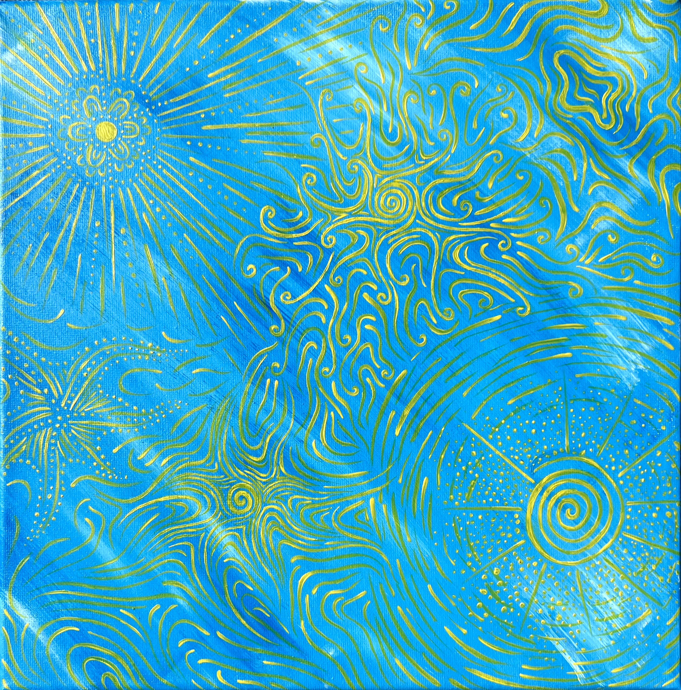

Light
J’ai peint cette toile pour un usage personnel, afin de décorer mon appartement dans un univers qui me ressemble. Mon intention était de créer une sensation de lumière en utilisant des traces blanches et bleutées, évoquant les reflets du soleil sur l’eau. Les motifs jaunes, presque dorés, viennent renforcer cet effet lumineux, comme une interprétation graphique des rayons du soleil.